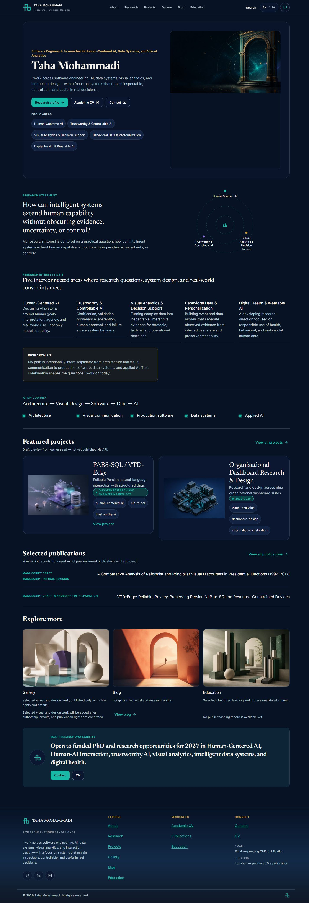
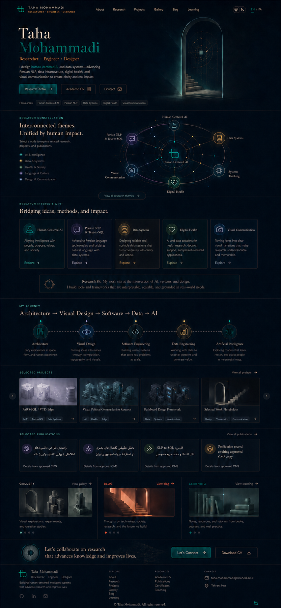

خانه: گراف مستقل
گراف داخل هیرو نفس میکشد. پورتال و قاب مستطیلی تصویر حذف میشوند تا فضا برای گرهها، برچسبهای فارسی و معرفی باز شود.
یک کانون بصری برای هر صفحه: هیروی خانه با معرفی خوانا و گراف پژوهشی تعاملی؛ صفحهٔ انتخاب زبان با پورتال سهبعدی. Three.js هندسه را میسازد و GSAP حرکتهای محدود را هماهنگ میکند.
گراف داخل هیرو نفس میکشد. پورتال و قاب مستطیلی تصویر حذف میشوند تا فضا برای گرهها، برچسبهای فارسی و معرفی باز شود.
پورتال از هندسه ساخته میشود. پیوند فارسی و انگلیسی منتظر انیمیشن نمیماند؛ با توقف حرکت یا بدون WebGL نیز ورودی کار میکند.
متن، دکمهها و گراف در یک هیرو بازچینی میشوند. برچسبها کوچک یا حذف نمیشوند و حرکت نباید اسکرول را بگیرد.
تصاویر دو طرف اندازه و طول یکسان ندارند؛ برای تشخیص تفاوت بصریاند، نه محاسبهٔ درصد شباهت. کانسپت خانه قدیمی است؛ ترکیب V2 بالاتر مطابق درخواست جدید شماست.


قاب بزرگ و فضای خالی زیر تصویر، نام کمتأکید و گراف جدا از هیرو، سه تفاوت مهم این نما هستند.
هیروی یکپارچه و کنترلهای HTML، بدون گراف تکراری.
هندسه، انتخاب و حرکت؛ دو زبان، دو پوسته و fallback.
تایپوگرافی، رسانه و تراکم متناسب هر خانوادهٔ صفحه.
بررسی مستقل، شش عرض، دسترسیپذیری و عملکرد؛ سپس پذیرش مالک.
اولین بسته: CA-01. هر بسته مالک فایل، وابستگی، آزمون، تحویل و علامت توقف دارد. باز کردن یک بسته، اجرای آن را آغاز نمیکند.
Add a versioned public consumer overlay for the merged hero and allowed scene dependencies. Keep the old pinned reference snapshot intact. Record a reproducible baseline before runtime edits.
وابسته به: شروع صف
باز کردن دستور کامل این بستهAdapt the existing public GraphPayloadOut into deterministic, exact-locale semantic data; resolve relatedRecords by eligible record family/ID, never guessed slugs.
وابسته به: CA-01
باز کردن دستور کامل این بستهBuild the new Home hero HTML, move semantic graph inside it and remove the separate Home graph placement in both locales. Lock renderer/controller TypeScript interfaces before graphics workers begin.
وابسته به: CA-02
باز کردن دستور کامل این بستهAuthor an original procedural constellation renderer against the locked scene contract. This packet does not integrate routes or animate DOM.
وابسته به: CA-03
باز کردن دستور کامل این بستهImplement selection, accessible native-control enhancement, projected HTML labels, and GSAP scene choreography against the locked renderer contract.
وابسته به: CA-04
باز کردن دستور کامل این بستهWire scene and controller into the semantic Home hero, load on eligible routes, and prove fallbacks without changing graph facts.
وابسته به: CA-05
باز کردن دستور کامل این بستهRebuild the language gateway portal from geometry and GSAP, keeping HTML links and brand intact. Work is independent of Home integration.
وابسته به: CA-04
باز کردن دستور کامل این بستهAlign header/footer typography, spacing, navigation and truthful unavailable states. Own shared chrome before page-family workers start.
وابسته به: CA-03
باز کردن دستور کامل این بستهMatch the remainder of Home: fit, journey, selected work, rails and compact collaboration band without filling unpublished data.
وابسته به: CA-06, CA-08
باز کردن دستور کامل این بستهAdopt shared graph semantics in Research with page-specific layout and align publication bibliography rows. Keep Home graph only in its hero.
وابسته به: CA-06, CA-08
باز کردن دستور کامل این بستهCorrect profile hierarchy, timeline/skills density and portrait semantics; retain honest CV/document availability.
وابسته به: CA-08
باز کردن دستور کامل این بستهRestore project editorial rows, distinct media roles and available-evidence affordances using existing sanitized records.
وابسته به: CA-08
باز کردن دستور کامل این بستهAlign Blog typography, featured/row rhythm and topic controls using the existing Writing components and canonical Blog routes.
وابسته به: CA-08
باز کردن دستور کامل این بستهAlign learning library hero, path and course rows while preserving genuine empty course/talk states.
وابسته به: CA-08
باز کردن دستور کامل این بستهAlign gallery feature/grid and existing detail template with rights-cleared data; eliminate decorative image repetition as fake work.
وابسته به: CA-08
باز کردن دستور کامل این بستهAlign Contact topic/form/sidebar hierarchy, replacing portal decoration with a calm content-led hero while preserving the existing form integration.
وابسته به: CA-08
باز کردن دستور کامل این بستهReview the exact integrated public commit against V2 and recorded evidence. Report PASS or REVISE for QA independently from owner acceptance and release readiness.
وابسته به: CA-07, CA-09, CA-10, CA-11, CA-12, CA-13, CA-14, CA-15, CA-16
باز کردن دستور کامل این بسته